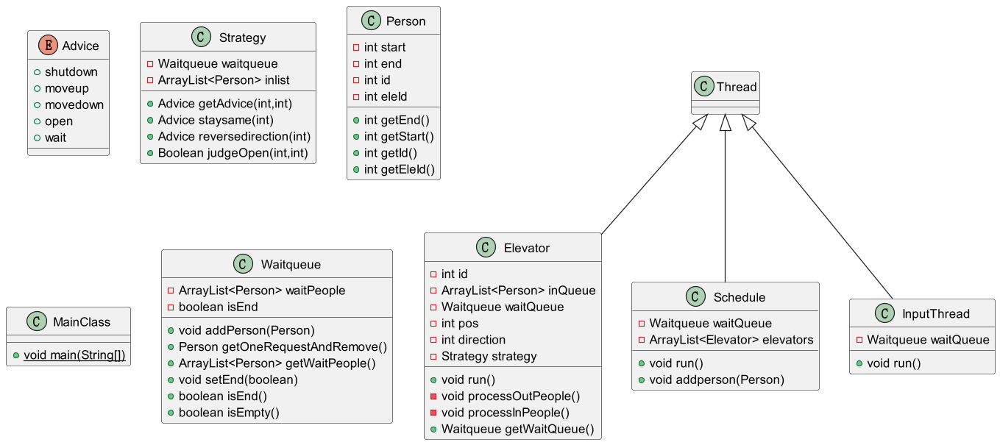
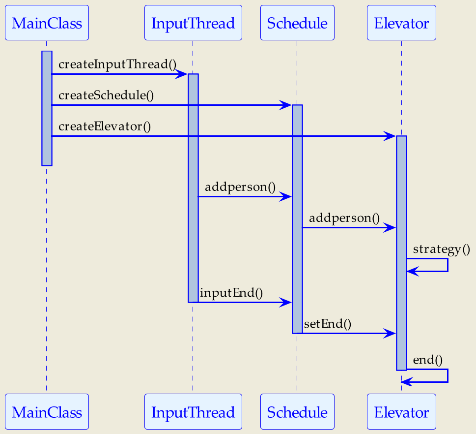
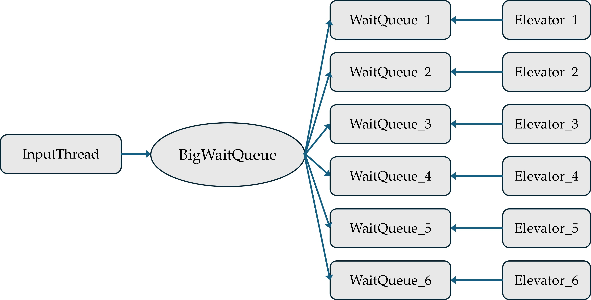
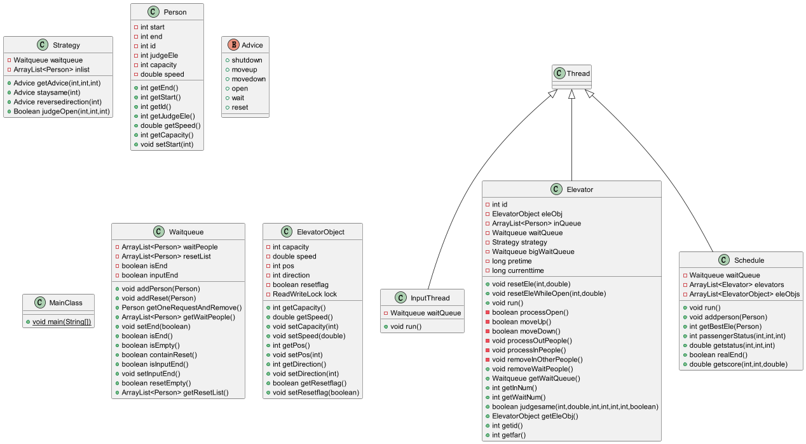
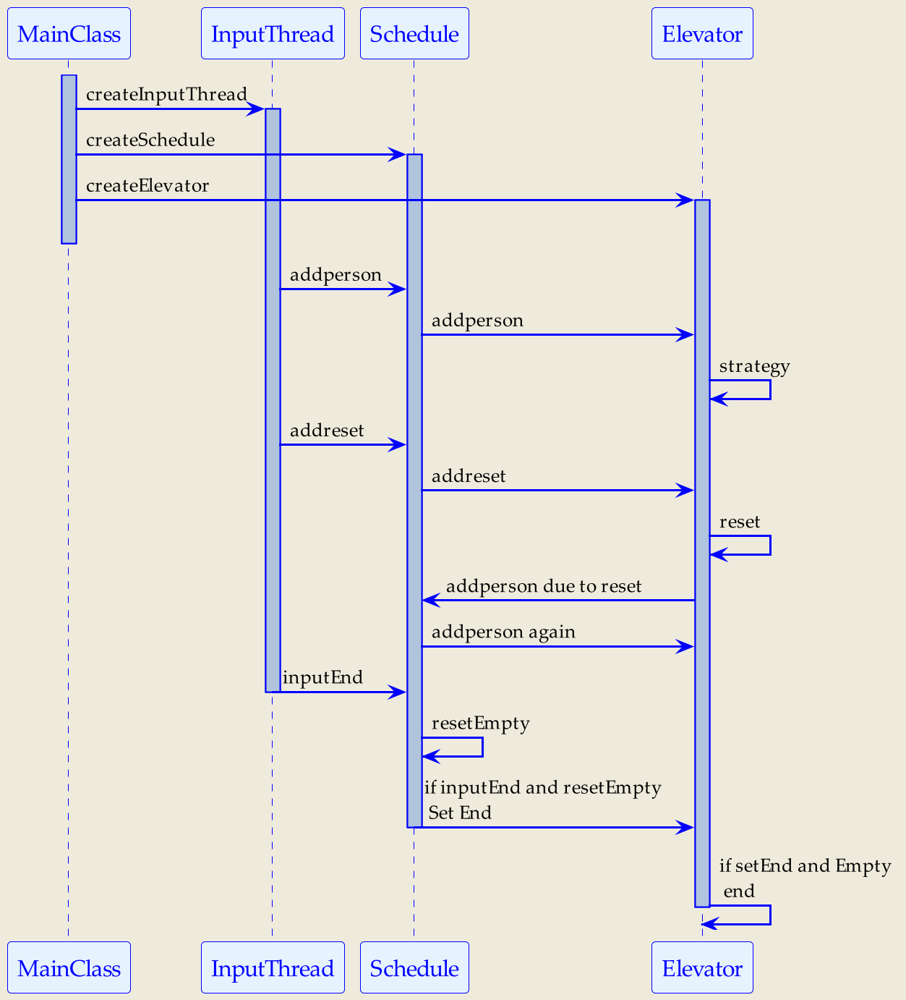
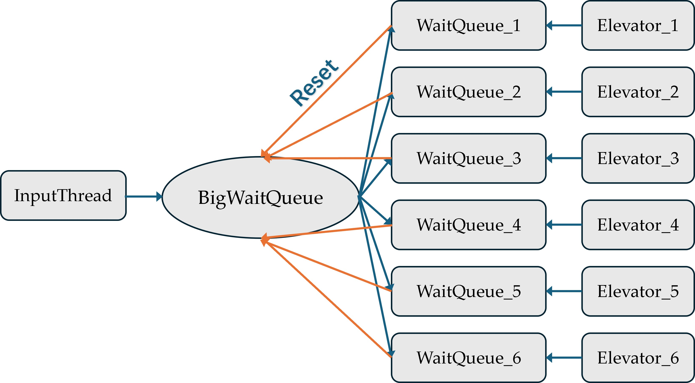
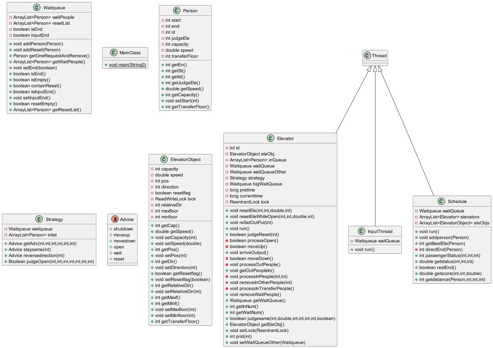
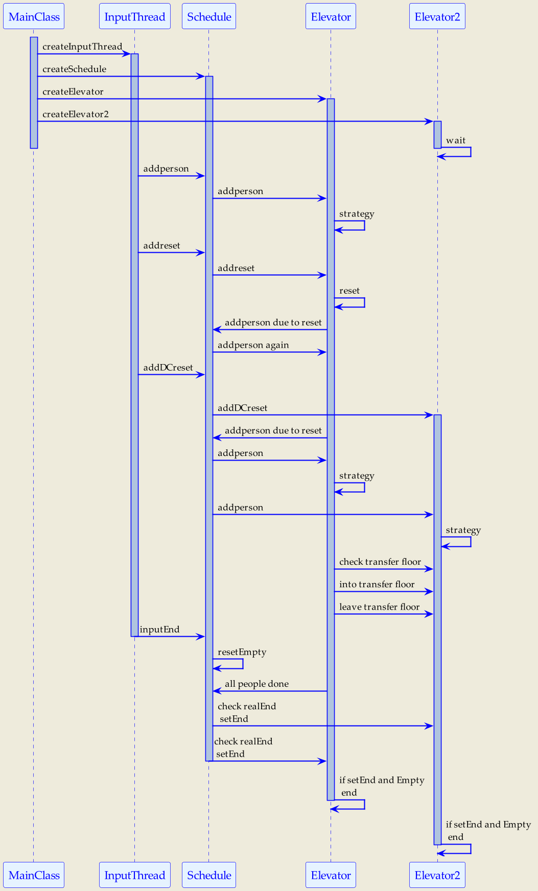
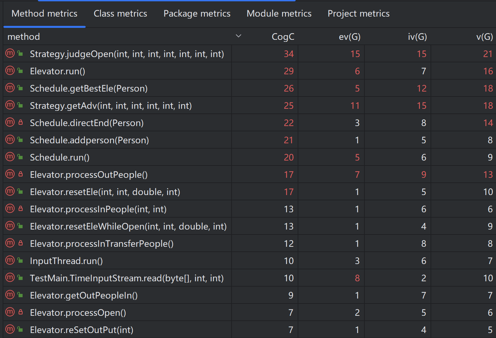
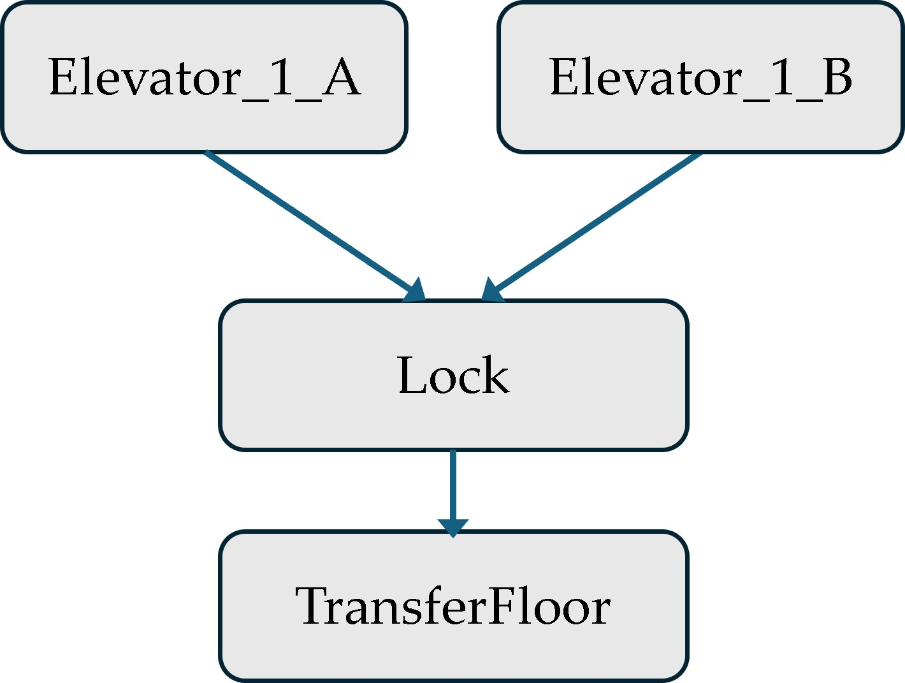

前言
第二单元的主题主要是以电梯调度为背景的多线程问题，一共有三次作业，第一次普通电梯调度，第二次含有reset容量和速度的电梯调度，第三次增加reset双轿厢电梯的电梯调度。
第一次作业由于刚接触多线程，写的时候不是很清楚什么地方应该设置锁，“万事开头难”，第二次作业稍微熟悉多线程，难点在捋清各个线程间的共享对象关系，第三次作业难在各个线程间的协作和通信关系进一步复杂化。我在这个单元的学习中熟悉了多线程，线程同步等，接下来对三次作业进行分析，并总结学习心得和体会。
第一次作业分析
总体分析
第一次作业难度不大，每个乘客进入指定电梯送达目的地。这次作业主要是熟悉线程创建，锁以及同步块的设置等操作，这里刚接触比较难以理解。
UML类图以及协作图


同步块的设置以及锁的选择
本次作业中，MainClass开启八个线程，一个InputThread负责读取定时投喂的数据并加入等待调度总表，一个Schedule负责从等待调度总表中读取乘客并分配给各个电梯的等待表，六个Elevator线程负责处理各自的等待表，接送其中的乘客到达目的地，Elevator借助Strategy类得到行为建议Advice，并做出相应行动。

其中，各个电梯的waitqueue是电梯线程和输入线程的共享对象，任何对这个队列的读写都应该加锁，所以，我选择在Waitqueue这个类的大部分读写方法都加上synchronized，比如：
public synchronized boolean isEmpty() {
return waitPeople.isEmpty();
}
public synchronized void addPerson(Person person) {
waitPeople.add(person);
notifyAll();
}结束条件的设置
六个电梯线程在wait的时候，需要有别的线程唤醒他们，这个唤醒的原因可能有以下几种：
-
调度器往电梯等待队列加入新的乘客
public synchronized void addPerson(Person person) { waitPeople.add(person); notifyAll(); } -
调度器发现输入已经结束并且调度器的总等待队列已经为空
// schedule.java synchronized (waitQueue) { if (waitQueue.isEmpty() && waitQueue.isEnd()) { for (Elevator elevator : elevators) { elevator.getWaitQueue().setEnd(true); } return; } else if (waitQueue.isEmpty() && !waitQueue.isEnd()) { try { waitQueue.wait(); } catch (InterruptedException e) { throw new RuntimeException(e); } } } // waitqueue.java public synchronized void setEnd(boolean isEnd) { this.isEnd = isEnd; notifyAll(); }以上两种情况都有对电梯等待队列的notifyAll，可以实现唤醒电梯线程，实验中等待队列给出的代码有一些冗余的notifyall，应该是可以删除的。
此外，对于输入线程和调度线程共享的总等待队列中的wait，会有InputThread的add和setEnd将其唤醒。
调度器设计
本次电梯指定了乘客要上的电梯，因此直接分配就可以，所以我分享一下我在电梯运行策略上的改变。
我在刚开始写的时候并没有考虑很多，直接采取了课程组提供的标程思路——ALS。
然而，ALS有一个很明显的缺陷，比如对于以下的输入样例，电梯会一次只接一个人，但是显然一次多下几楼再回到十一楼是更好的选择。由于这个策略问题，强测在没有WA的情况下只有87分，所幸第一次作业同C房的同学并没有卡这个超时，经过hack发现B，C房的同学平均有一半在这种样例上会出现超时的问题，有的是采用ALS，有的是写了伪LOOK算法，有的是在高并发的情况下线程不安全。
[1.0]100-FROM-1-TO-11-BY-1
[49.9]1-FROM-10-TO-11-BY-1
[49.9]2-FROM-9-TO-11-BY-1
[49.9]3-FROM-8-TO-11-BY-1
[49.9]4-FROM-7-TO-11-BY-1
[49.9]5-FROM-6-TO-11-BY-1
[49.9]6-FROM-5-TO-11-BY-1
[49.9]7-FROM-4-TO-11-BY-1
[49.9]8-FROM-3-TO-11-BY-1
[49.9]9-FROM-2-TO-11-BY-1
[49.9]10-FROM-1-TO-11-BY-1于是，我在强测后对第五次作业的运行策略进行了调整，改为了LOOK算法，思路主要如下：
- 电梯初始方向向上，在没有要接送的乘客时静止
- 当从静止到接收到新的乘客，去接这个乘客
- 当运行的过程中途径楼层有乘客方向和电梯一样的就上电梯
- 一直保持同方向运行直到电梯里往这个方向的人都送完，并且现在电梯运行方向的前方没有等待的乘客（不管乘客的方向是否和电梯一致，因为到了最远的乘客楼层电梯可以转向，则之前反向的乘客就同向且可以上电梯了）
- 当电梯里往运行方向的人都送完，并且现在电梯运行方向的前方没有等待的乘客时，就转向
- 电梯运行中判断开门：
- 有乘客到达目的地
- 有乘客方向和电梯方向一致（电梯转向时判断两次）
总的来说，LOOK算法就是尽可能让电梯沿同方向运行更长的距离，减少转向的次数。
LOOK算法并不是直接写在电梯线程中，而是集成在电梯线程的Strategy类中，每个Strategy对象共享了该电梯内部的乘客，外部的等待对列，接受电梯的位置和方向为参数，并根据此给出Advice，包含五种行为，电梯线程可以根据给出的建议做出相应的行为，这样的架构比较清晰。
public enum Advice {
shutdown, moveup, movedown, open, wait
}
// Elevator.java
Advice advice = strategy.getAdvice(pos, direction);
switch (advice) {
case shutdown:
return;
case wait:
synchronized (waitQueue) {
waitQueue.wait();
}
sleep(1);
break;
case open:
······
case moveup:
······
case movedown:
······
default:
break;
}Bug分析
- 互测环节检查出自己的TLE问题，是由于上面所说的ALS策略的不足导致的
- 以下是我的电梯在接收到wait建议时的行为，在第五次作业并没有出bug，不过在第七次作业中发现这里可能会存在一些缺陷，在得到建议和电梯准备执行是存在间隔的，间隔中可能会有新的请求或者setEnd发送给电梯，如果这时直接wait且输入结束且分配结束，可能会导致这个电梯线程一直wait无法结束，所以应该改为：
case wait:
synchronized (waitQueue) {
waitQueue.wait();
}
sleep(1);
break;case wait:
synchronized (waitQueue) {
if (waitQueue.isEnd()) {
break;
}
if (waitQueue.getWaitPeople().isEmpty())
waitQueue.wait();
} else {
break;
}
}
sleep(1);
break;- 在我的strategy类中考虑到是否返回等待或者关闭，直接使用isEmpty和isEnd来判断，中间可能是存在间隔的，可能状态会被改变（比如在判断empty后加入了乘客请求，并且setEnd了，导致电梯会被关闭，但此时乘客并没有送完），所以对wait和shutdown的判断加上synchronized，应该是可以保证得到正确的行为，以及电梯能够正确的结束和等待。
public Advice getAdvice(int pos, int direction) {
boolean judgeEmpty;
boolean judgeEnd;
synchronized (waitqueue) {
judgeEmpty = waitqueue.isEmpty();
judgeEnd = waitqueue.isEnd();
if (inlist.isEmpty() && judgeEmpty && judgeEnd) {
return Advice.shutdown;
} else if (inlist.isEmpty() && judgeEmpty && !judgeEnd) {
return Advice.wait;
}
}
······性能优化
第一次作业我并没有任何的优化，加上ALS策略，导致性能分不太理想，在第六次作业开始前，我对我的电梯做了以下优化：
-
修改为LOOK算法。
-
实现了精确睡眠，即存储电梯上一次某个行为的System.currentTimeMillis()为pretime，在这次电梯做出某个行为时计算此时的System.currentTimeMillis()为currenttime，睡眠的时间就为（应睡的时间-（currenttime-pretime），通过初始化pretime，可以同时实现电梯的弹射起步。
-
实现"电梯的折返"，把电梯上下行的sleep打断，在中间某个时刻用原来电梯位置还没有改变的情况来再给出一次建议，如果是开门，则跳过下面的语句重新判断建议，让刚开的乘客进来
case moveup: currenttime = System.currentTimeMillis(); if (currenttime - pretime < 380) { sleep(380 - (currenttime - pretime)); } tmp = strategy.getAdvice(pos, direction); if (tmp == Advice.open) { continue; } sleep(20); ······ break; -
在wait因某些请求醒来时sleep（1），由时间局部性原理（？），可能同时会有很多请求一起到来，不妨多sleep一会儿，让调度器尽可能能够先把这些请求分配完电梯再行动。
case wait:
synchronized (waitQueue) {
waitQueue.wait();
}
sleep(1);
break;总体来说除了电梯运行策略以外，其他的优化都是锦上添花，并不是那么必要。
第二次作业分析
总体分析
第二次作业难度相比第一次跨度比较大，电梯新增了reset请求，并且每个乘客可以去任何电梯，乘客进入电梯和电梯移动前要输出RECEIVE来说明乘客请求分配情况。这次作业由于各个线程间共享的对象大大增加。
UML类图以及协作图


同步块的设置以及锁的选择
本次作业中，BigWaitQueue由于reset请求会被六个电梯线程，输入线程以及调度线程所共享。

对于reset请求，我在waitqueue中增加了一个ResetList，用于存储各个电梯接收到的reset请求。
hw6中由于电梯会reset速度和容量，我选择新建一个电梯对象类，包含楼层，方向，速度等属性。在hw5时尚没有觉得这些属性放置在电梯线程中有何不妥，直到hw6才觉得分离电梯对象和电梯线程是比较明智的选择，这样既便于重置时对电梯状态的改变设置同步块，也可以把对于电梯属性的读取和修改等方法提取出来，与电梯线程的行为分离，还可以防止爆行数。
在hw6中接触到了读写锁操作，我把读写锁局部用于电梯对象类的读写上，并没有大幅修改之前的代码。
电梯重置流程
调度线程会把每个电梯的重置请求加入到他的重置队列中，电梯在每次进入while循环时会首先检查是不是有待处理的重置请求，若有则进入重置，先把到目的地的人赶出来，再把没到目的地的人更换起始地重新投入总等待队列，最后把等待队列中的人投入总等待队列。
结束条件的设置
由于reset会更改总等待队列，这次的结束条件更改为输入结束，且总请求队列为空，且每个电梯线程都没有待处理的reset。
调度器设计
hw6才真正涉及到了乘客的调度。在比较了均匀分配，随机分配，优先级分配，影子电梯等方法后，我参考这位学长的博客（volca’s blog (volcaxiao.top)）选择了评价函数方法，既可以避免均匀，随机，优先级等模式比较固定导致性能不理想，又可以达到效果接近影子电梯且代码量和思维量都比较小，达到了99+的强测分数。
我的计算每个电梯评价的函数是
$$
\frac{(25 - distance - status - speed * 5)}{(\sqrt{speed})}
$$
对speed开方是由于不想让速度成为较大的影响因素，导致所有人过于优先去速度快的电梯。我的想法是在比较快的情况下让容量影响更大，同时搭载多个人比较能兼顾耗电量。
其中，distance是电梯从当前位置继续前进（包括转向）直到方向与乘客方向一致且楼层相同的距离，status是电梯容量与乘客数的评价，为
public int passengerStatus(int capacity, int innum, int waitnum) {
double busyIndex = capacity * 1.3 - innum * 1.1 - waitnum;
if (busyIndex > 2) {
return -2;
} else if (busyIndex > 0) {
return 0;
} else if (busyIndex > -3) {
return 3;
} else {
return 5 + waitnum;
}
}通过计算每个电梯的评价得分，选择最优的电梯并把乘客分配给它，其中，对于在重置中的电梯，把distance+3，模拟等待重置完成的时间。考虑到电梯重置状态的改变与读取状态的先后不确定性，可以在计算完后再读取一次电梯参数，若不一样则重新计算评价得分（非必要，因为发生的概率比较小，且即使没有分配到最优的电梯也能让乘客到达目的地，不过这一点在hw7中让我出了bug）
public int getBestEle(Person person) {
double maxscore = -2000;
int maxid = -1;
double maxstatus = 0;
for (int i = 0; i < elevators.size(); i++) {
······
int distance = (person.getEnd() - person.getStart()) * direction >= 0 ?
(person.getStart() - pos) * direction >= 0 ?
abs(person.getStart() - pos) : 20 - abs(person.getStart() - pos) :
direction == 1 ?
22 - pos - person.getStart() : pos + person.getStart() - 2;
if (resetflag) {
distance += 3;
}
double status = passengerStatus(capacity, innum, waitnum);
double score = getscore(distance, (int) status, speed);
if (!elevators.get(i).judgesame(capacity, speed, direction,
pos, innum, waitnum, resetflag)) {
······
}
if (score > maxscore) {
······
} else if (score == maxscore) {
······
}
}
}
return maxid;
}对于分配给没有在重置的电梯，由调度器输出RECEIVE，对于在重置的电梯，等待电梯重置结束后检查它的waitqueue中是否有请求，由它负责输出RECEIVE。
Bug分析
-
在调整评价函数参数时，曾把容量评价函数设置如下
······ } else if (busyIndex > -3) { return 3; } else { return 5; }这是由于在调参时效果似乎好一点点，但是为了这一点点不确定的性能导致对电梯等待队列过大时的惩罚不够，导致互测中被hack了几十个人乘坐一部电梯，超出了时间上限，调整为5 + waitnum 即可避免分配过于不均匀，且还在函数中发现了一处使用变量错误（），也对调度产生了一些负面的影响。
-
还有输出先后上出现的错误，如下

if (person.getJudgeEle() != 1) { //person int eleid = getBestEle(person); elevators.get(eleid).getWaitQueue().addPerson(person); if (!eleObjs.get(eleid).getResetflag()) { TimableOutput.println("RECEIVE-" + person.getId() + "-" + (eleid + 1)); }这个bug是在互测中被找到的，当时我也没有弄明白这个bug是在哪里产生的，重新交了一次就过了，直到hw7才意识到多线程中输出和某个行为的先后很重要，比如这里先加入人再输出
RECEIVE，就有可能加入人之后电梯马上就重置或者开门，这些输出反而比RECEIVE更早，导致判定为错。应该改为先RECEIVE，再addperson。
性能优化
- 可以实现电梯开门的时候判断是否要重置，避免重复开关门
第三次作业分析
总体分析
第三次作业新增了reset为双轿厢电梯的请求，同一部电梯的上下两个电梯不能同时到达换乘楼层，乘客可以借助不同电梯到达目的地。这次作业对进程间的协作提出了更高的要求。
UML类图以及协作图



可以看到第三次作业后一些方法的复杂度比较高，基本上都是Strategy类对电梯行为的判断，以及Schedule类在不同情况下对电梯调度的选择。
同步块的设置以及锁的选择
第三次作业新增双轿厢电梯的要求，我选择在一开始就开启十二个线程，不过将后六个线程的最高最低楼层都设为0，让他们无法收到乘客而一直在wait，直到对应的双轿厢电梯重置，才会投入使用。
双轿厢不碰撞
经过和室友的探讨，我选择在两个对应的电梯线程间共享一把锁，只有拿到锁才能进入换成楼层，同时离开换乘楼层要及时释放锁。这样即使在上下两个电梯同时要进入换乘楼层时，由于锁的特性也不会冲突。
for (int i = 0; i < 6; i++) {
ReentrantLock lock = new ReentrantLock();
elevators.get(i).setLock(lock);
elevators.get(i + 6).setLock(lock);
}
同时，电梯在换乘楼层的移动不受receive的限制，当一个电梯要在换乘楼层陷入wait时，要及时向上或者向下移动一次，避免一直占有锁。
结束条件的设置
由于换乘，电梯随时会下来人重新进入请求队列，所以这次的结束条件更改为输入结束，且总请求队列为空，且每个电梯线程的等待队列，reset队列，内部乘客都为空才真正结束。
或者也可以采用一个静态的计数器，对每一个进来的请求以及处理完的请求进行计数，保证所有的请求处理完再结束。
调度器设计
第三次作业我依然沿用了评价函数的方法，不过由于双轿厢电梯耗电量以及运行效率优势比较明显，我设置了优先级：
- 当存在可以把当前乘客直接送往目的地的双轿厢电梯时，在这些双轿厢电梯里选
- 其次在换乘的双轿厢电梯和直达的普通电梯里选，对于双轿厢电梯，为了给他更大的优势，我会在distance的计算里额外-5，让他在不算太坏的情况下优先被选择。
当乘客在换乘楼层下来时，根据现在的电梯状况给他分配新的电梯，而不是固定于原来的电梯。
第三次作业评价函数方法显示出较好的适应性，在强测错了一个点的情况下仍然达到了94.99+的分数。
Bug分析
-
hw7强测wa了一个点，同样是由于hw6中提到的行为和输出先后顺序导致的
synchronized (bigWaitQueue) { synchronized (inQueue) { if (!inQueue.isEmpty()) { TimableOutput.println("OPEN-" + oripos + "-" + prid(id)); processInPeople(1, oripos); removeInOtherPeople(oripos); sleep(400); TimableOutput.println("CLOSE-" + oripos + "-" + prid(id)); } } removeWaitPeople(); bigWaitQueue.notifyAll(); TimableOutput.println("RESET_BEGIN-" + id); // ！ }在输出reset begin的时候，如果把他放到了同步块外，就难以保证先输出reset begin再让释放出去的乘客被重新分配，会表现出还没有reset，但是某一个乘客被连续
RECEIVE了两次的错误。 -
互测中出现了一个错误，就是高并发的情况下，我的调度器会把一个乘客分给一部双子电梯中的某一个，但是这一个电梯的运营范围无法接到这个乘客，由于我并没有给电梯设置实际的运营范围，也就是说我的电梯能够运行到哪取决于它的等待队列里的乘客的情况，而他的等待队列又取决于调度器，只要调度器出了一点无法处理的错，我的电梯就会越界运营。
由于这个情况出现的概率很小，我也是重新提交一次就通过了互测。但是我大概考虑了一下，觉得这个bug比较难以复现和定位，不好在调度器层面彻底避免。我认为可以通过电梯自身的检查，当接收到不在运营范围的乘客时，主动抛出，就可以很好的解决这个bug，也许还可以避免其他潜在的bug，增强程序的鲁棒性。
性能优化
-
在双轿厢电梯的等待对方离开换乘楼层时，可以先睡眠，然后当锁空出来就可以马上输出，也就是说，锁控制的不是电梯的位置，是电梯到达某个位置后的输出，这样双轿厢电梯就可以无缝衔接进入换乘楼层。
sleep(400); eleObj.setDirection(1); eleObj.setPos(eleObj.getPos() + 1); if (eleObj.getPos() == eleObj.getTransferFloor()) { lock.lock(); } ······ //output pretime = System.currentTimeMillis(); if ((eleObj.getPos() - 1) == eleObj.getTransferFloor()) { sleep(1); lock.unlock();
程序结构的迭代
由前面的UML类图中可以看到三次作业中，仅第二次作业新增一个电梯对象类，结构总体上是稳定的。
稳定的内容是电梯系统的各个组成部分，包括输入，调度，电梯运行等，易变的是对电梯运行的各种限制，比如速度，容量，范围等等，这些都可以结合需要在电梯对象类中做出相应的调整。
Debug方法
- 新建一个Debug类，通过对静态变量设置，可以输出程序运行过程中的信息，也就可以查看是哪一步出了问题，以及线程可能是由于什么原因没有结束，这是我最常用的方法
- 使用idea自带的断点调试，可以查看有哪些线程最后没有结束，使用的比较少
心得体会
-
多线程的bug真的是防不胜防，刚开始关系还没有那么复杂的时候尚能捋清，经过迭代，到处都充斥着同步块或者同步方法，很难避免出现bug，程序可以增加一些主动应对bug的手段，而不是寄希望于不会出现意料之外的bug。
-
我的藏得比较深的bug都是在高并发的情况下出现的，这种情况最容易暴露程序问题
-
同步块要注意范围，考虑临界情况会不会产生影响
-
可以把复杂的任务拆成几个比较独立的部分，控制代码的复杂度，也便于自己检查
-
可以写之前与同学交流思路，胸有成竹，尽量写出比较简洁的代码
如果您喜欢此博客或发现它对您有用，则欢迎对此发表评论。 也欢迎您共享此博客，以便更多人可以参与。 如果博客中使用的图像侵犯了您的版权，请与作者联系以将其删除。 谢谢 ！